Pandas
Table of Contents
- 1. 核心数据结构
- 2. 函数应用
- 3. 索引
- 4. 分组与聚合
- 5. 处理丢失数据
- 6. 时间序列
- 7. 可视化
- 8. 导入导出
- 9. 示例工程
- 10. 参考资料
Table of Contents
- 1. 核心数据结构
- 2. 函数应用
- 3. 索引
- 4. 分组与聚合
- 5. 处理丢失数据
- 6. 时间序列
- 7. 可视化
- 8. 导入导出
- 9. 示例工程
- 10. 参考资料
| Author | Hao Ruan (haoru@cisco.com) |
| Date | 2018-02-21 21:52:40 |
1 核心数据结构
1.1 Panel
Panel 是三维带标签的数组。
Panel 由三个标签组成：
- items
- 坐标轴 0 ，索引对应的元素是一个 DataFrame
- major_axis
- 坐标轴 1 , DataFrame 里的行标签
- minor_axis
- 坐标轴 2 , DataFrame 里的列标签
1.2 Series
Series 是一维带标签的数组，数组里可以放任意的数据（整数，浮点数，字符串，Python Object）。
其基本的创建函数是： pd.Series(data, index=index)
其中 index 是一个列表，用来作为数据的标签。data 可以是不同的数据类型：
- Python 字典
- ndarray 对象
- 一个标量值，如 5
1.2.1 创建
1.2.1.1 从 ndarray 创建
s = pd.Series(np.random.randn(5), index=['a', 'b', 'c', 'd', 'e']) log("s", s) log("s.index", s.index) s2 = pd.Series(np.random.randn(5)) log("s2", s2) log("s2.index", s2.index)
====================================== s ======================================= a 2.100013 b 0.310119 c -0.989646 d -0.756308 e -1.137259 dtype: float64 =================================== s.index ==================================== Index(['a', 'b', 'c', 'd', 'e'], dtype='object') ====================================== s2 ====================================== 0 0.402350 1 0.665836 2 1.344499 3 0.748183 4 0.288010 dtype: float64 =================================== s2.index =================================== RangeIndex(start=0, stop=5, step=1)
1.2.1.2 从字典创建
d = {'a' : 0., 'b' : 1., 'd' : 3} s = pd.Series(d, index=list('abcd')) log("s", s)
====================================== s ======================================= a 0.0 b 1.0 c NaN d 3.0 dtype: float64
1.2.1.3 从标量创建
s = pd.Series(3, index=list('abcde')) log("s", s)
====================================== s ======================================= a 3 b 3 c 3 d 3 e 3 dtype: int64
1.2.2 特性
1.2.2.1 类 ndarray 对象
s = pd.Series(np.random.randn(5)) log("s[0]", s[0]) log("s[:3]", s[:3]) log("s[[1, 3, 4]]", s[[1, 3, 4]]) log("np.exp(s)", np.exp(s)) log("np.sin(s)", np.sin(s))
===================================== s[0] ===================================== 1.5776697888512055 ==================================== s[:3] ===================================== 0 1.577670 1 1.531556 2 0.616357 dtype: float64 ================================= s[[1, 3, 4]] ================================= 1 1.531556 3 0.200175 4 -0.264828 dtype: float64 ================================== np.exp(s) =================================== 0 4.843656 1 4.625370 2 1.852168 3 1.221617 4 0.767338 dtype: float64 ================================== np.sin(s) =================================== 0 0.999976 1 0.999230 2 0.578066 3 0.198841 4 -0.261743 dtype: float64
1.2.2.2 类字典对象
s = pd.Series(np.random.randn(5), index=['a', 'b', 'c', 'd', 'e']) s['e'] = 5 log("s", s) log("'e' in s", 'e' in s) log("s.get('f', np.nan)", s.get('f', np.nan))
====================================== s =======================================
a 0.313574
b 1.412671
c 0.558592
d 1.575591
e 5.000000
dtype: float64
=================================== 'e' in s ===================================
True
============================== s.get('f', np.nan) ==============================
nan
1.2.2.3 标签对齐
相同索引值才进行操作
s1 = pd.Series(np.random.randn(3), index=['a', 'c', 'e']) s2 = pd.Series(np.random.randn(3), index=['a', 'd', 'e']) log("s1", s1) log("s2", s2) log("s1 + s2", s1 + s2)
====================================== s1 ====================================== a 1.861968 c -0.937306 e 0.739111 dtype: float64 ====================================== s2 ====================================== a 0.537091 d -0.527021 e -0.576973 dtype: float64 =================================== s1 + s2 ==================================== a 2.399058 c NaN d NaN e 0.162138 dtype: float64
1.3 DataFrame
DataFrame 是 二维带行标签和列标签的数组 。
可以把 DataFrame 想象成一个 Excel 表格或一个 SQL 数据库的表格，还可以想象成是一个 Series 对象字典。
它是 Pandas 里最常用的数据结构。
创建 DataFrame 的基本格式是：
pd.DataFrame(data, index=index, columns=columns)
其中 index 是行标签，columns 是列标签，data 可以是下面的数据：
- 由一维 numpy 数组，list，Series 构成的字典
- 二维 numpy 数组
- 一个 Series
- 另外的 DataFrame 对象
1.3.1 创建
1.3.1.1 从字典创建
key 为 DataFrame 的列；value 为对应列下的值
d = {'one' : pd.Series([1, 2, 3], index=['a', 'b', 'c']), 'two' : pd.Series([1, 2, 3, 4], index=['a', 'b', 'c', 'd'])} log("pd.DataFrame(d)", pd.DataFrame(d)) log("pd.DataFrame(d, index=['d', 'b', 'a'])", pd.DataFrame(d, index=['d', 'b', 'a'])) log("pd.DataFrame(d, index=['d', 'b', 'a'], columns=['two', 'three'])", pd.DataFrame(d, index=['d', 'b', 'a'], columns=['two', 'three']))
=============================== pd.DataFrame(d) ================================ one two a 1.0 1 b 2.0 2 c 3.0 3 d NaN 4 ==================== pd.DataFrame(d, index=['d', 'b', 'a']) ==================== one two d NaN 4 b 2.0 2 a 1.0 1 ======= pd.DataFrame(d, index=['d', 'b', 'a'], columns=['two', 'three']) ======= two three d 4 NaN b 2 NaN a 1 NaN
d = {'one' : [1, 2, 3, 4], 'two' : [21, 22, 23, 24]} log("pd.DataFrame(d)", pd.DataFrame(d)) log("pd.DataFrame(d, index=['a', 'b', 'c', 'd'])", pd.DataFrame(d, index=['a', 'b', 'c', 'd']))
=============================== pd.DataFrame(d) ================================ one two 0 1 21 1 2 22 2 3 23 3 4 24 ================= pd.DataFrame(d, index=['a', 'b', 'c', 'd']) ================== one two a 1 21 b 2 22 c 3 23 d 4 24
df = pd.DataFrame({ 'A': 1, 'B': pd.Timestamp('20160301'), 'C': range(4), 'D': np.arange(5, 9), 'E': 'text', 'F': ['AA', 'BB', 'CC', 'DD']}) log("df", df)
====================================== df ====================================== A B C D E F 0 1 2016-03-01 0 5 text AA 1 1 2016-03-01 1 6 text BB 2 1 2016-03-01 2 7 text CC 3 1 2016-03-01 3 8 text DD
1.3.1.2 从结构化数据列表创建
data = [(1, 2.2, 'Hello'), (2, 3., "World")] log("pd.DataFrame(data)", pd.DataFrame(data)) log("pd.DataFrame(data, index=['first', 'second'], columns=['A', 'B', 'C'])", pd.DataFrame(data, index=['first', 'second'], columns=['A', 'B', 'C']))
============================== pd.DataFrame(data) ==============================
0 1 2
0 1 2.2 Hello
1 2 3.0 World
==== pd.DataFrame(data, index=['first', 'second'], columns=['A', 'B', 'C']) ====
A B C
first 1 2.2 Hello
second 2 3.0 World
1.3.1.3 从字典列表创建
data = [{'a': 1, 'b': 2}, {'a': 5, 'b': 10, 'c': 20}] log("pd.DataFrame(data)", pd.DataFrame(data)) log("pd.DataFrame(data, index=['first', 'second'])", pd.DataFrame(data, index=['first', 'second'])) log("pd.DataFrame(data, columns=['a', 'b'])", pd.DataFrame(data, columns=['a', 'b']))
============================== pd.DataFrame(data) ==============================
a b c
0 1 2 NaN
1 5 10 20.0
================ pd.DataFrame(data, index=['first', 'second']) =================
a b c
first 1 2 NaN
second 5 10 20.0
==================== pd.DataFrame(data, columns=['a', 'b']) ====================
a b
0 1 2
1 5 10
1.3.1.4 从元组字典创建
实际应用中，会通过数据清洗的方式，把数据整理成方便 Pandas 导入且可读性好的格式。 然后再通过 reindex/groupby 等方式转换成复杂数据结构。
d = {('a', 'b'): {('A', 'B'): 1, ('A', 'C'): 2}, ('a', 'a'): {('A', 'C'): 3, ('A', 'B'): 4}, ('a', 'c'): {('A', 'B'): 5, ('A', 'C'): 6}, ('b', 'a'): {('A', 'C'): 7, ('A', 'B'): 8}, ('b', 'b'): {('A', 'D'): 9, ('A', 'B'): 10}} # 多级标签 log("pd.DataFrame(d)", pd.DataFrame(d))
=============================== pd.DataFrame(d) ================================
a b
a b c a b
A B 4.0 1.0 5.0 8.0 10.0
C 3.0 2.0 6.0 7.0 NaN
D NaN NaN NaN NaN 9.0
1.3.1.5 从 Series 创建
s = pd.Series(np.random.randn(5), index=['a', 'b', 'c', 'd', 'e']) log("pd.DataFrame(s)", pd.DataFrame(s)) log("pd.DataFrame(s, index=['a', 'c', 'd'])", pd.DataFrame(s, index=['a', 'c', 'd'])) log("pd.DataFrame(s, index=['a', 'c', 'd'], columns=['A'])", pd.DataFrame(s, index=['a', 'c', 'd'], columns=['A']))
=============================== pd.DataFrame(s) ================================
0
a -0.463642
b -0.437101
c 0.493508
d 0.901178
e 0.710309
==================== pd.DataFrame(s, index=['a', 'c', 'd']) ====================
0
a -0.463642
c 0.493508
d 0.901178
============ pd.DataFrame(s, index=['a', 'c', 'd'], columns=['A']) =============
A
a -0.463642
c 0.493508
d 0.901178
1.3.1.6 指定行列索引创建
dates = pd.date_range('20160301', periods=6) log("dates", dates) df = pd.DataFrame(np.random.randn(6,4), index=dates, columns=list('ABCD')) log("df", df)
==================================== dates =====================================
DatetimeIndex(['2016-03-01', '2016-03-02', '2016-03-03', '2016-03-04',
'2016-03-05', '2016-03-06'],
dtype='datetime64[ns]', freq='D')
====================================== df ======================================
A B C D
2016-03-01 -1.135095 0.645389 0.261528 0.006286
2016-03-02 -1.398516 0.933692 1.171984 0.190349
2016-03-03 -0.156743 -0.413400 -0.341773 -0.436914
2016-03-04 -1.680793 1.255623 0.710777 1.111086
2016-03-05 0.367721 -0.703373 -0.003139 -0.722008
2016-03-06 -0.219554 -0.092635 -0.418657 -1.195445
1.3.2 数据操作
df = pd.DataFrame(np.random.randn(6, 4), index=list('ABCDEF'), columns=['one', 'two', 'three', 'four']) log("df", df)
====================================== df ======================================
one two three four
A -1.636889 -0.152187 -0.345509 -0.183278
B 0.706041 -0.915191 -0.351342 1.194307
C -0.393915 -0.509089 -0.675040 -0.754762
D 0.089809 -0.200281 -0.060704 -0.008419
E 0.434580 -1.832528 -1.257836 -0.731157
F 1.750935 -0.405841 0.099753 0.875137
1.3.2.1 列选择(Series)
log("df['one']", df['one']) log("df.one", df.one)
================================== df['one'] =================================== A -1.636889 B 0.706041 C -0.393915 D 0.089809 E 0.434580 F 1.750935 Name: one, dtype: float64 ==================================== df.one ==================================== A -1.636889 B 0.706041 C -0.393915 D 0.089809 E 0.434580 F 1.750935 Name: one, dtype: float64
1.3.2.2 列选择(DataFrame)
log("df.loc[:, ['one', 'two']]", df.loc[:, ['one', 'two']]) log("df.iloc[:, 0:1]", df.iloc[:, 0:1])
========================== df.loc[:, ['one', 'two']] ===========================
one two
A -1.636889 -0.152187
B 0.706041 -0.915191
C -0.393915 -0.509089
D 0.089809 -0.200281
E 0.434580 -1.832528
F 1.750935 -0.405841
=============================== df.iloc[:, 0:1] ================================
one
A -1.636889
B 0.706041
C -0.393915
D 0.089809
E 0.434580
F 1.750935
1.3.2.3 列赋值
df['three'] = df['one'] + df['two'] log("df", df)
====================================== df ======================================
one two three four
A -1.636889 -0.152187 -1.789076 -0.183278
B 0.706041 -0.915191 -0.209150 1.194307
C -0.393915 -0.509089 -0.903004 -0.754762
D 0.089809 -0.200281 -0.110472 -0.008419
E 0.434580 -1.832528 -1.397948 -0.731157
F 1.750935 -0.405841 1.345094 0.875137
1.3.2.4 列删除
del df['three'] log("df", df)
====================================== df ======================================
one two four
A -1.636889 -0.152187 -0.183278
B 0.706041 -0.915191 1.194307
C -0.393915 -0.509089 -0.754762
D 0.089809 -0.200281 -0.008419
E 0.434580 -1.832528 -0.731157
F 1.750935 -0.405841 0.875137
s = df.pop('four') log("s", s) log("df", df)
====================================== s =======================================
A -0.183278
B 1.194307
C -0.754762
D -0.008419
E -0.731157
F 0.875137
Name: four, dtype: float64
====================================== df ======================================
one two
A -1.636889 -0.152187
B 0.706041 -0.915191
C -0.393915 -0.509089
D 0.089809 -0.200281
E 0.434580 -1.832528
F 1.750935 -0.405841
result = df.drop(['one', 'two'], axis=1) # df 不变 log("result", result)
==================================== result ==================================== Empty DataFrame Columns: [] Index: [A, B, C, D, E, F]
1.3.2.5 增加列
1.3.2.5.1 添加到最后
df['flag'] = df['one'] > 0 df['five'] = 5 df['one_trunc'] = df['one'][:2] log("df", df)
====================================== df ======================================
one two flag five one_trunc
A -1.636889 -0.152187 False 5 -1.636889
B 0.706041 -0.915191 True 5 0.706041
C -0.393915 -0.509089 False 5 NaN
D 0.089809 -0.200281 True 5 NaN
E 0.434580 -1.832528 True 5 NaN
F 1.750935 -0.405841 True 5 NaN
1.3.2.5.2 指定位置添加
df.insert(1, 'bar', df.one + df.two) log("df", df)
====================================== df ======================================
one bar two flag five one_trunc
A -1.636889 -1.789076 -0.152187 False 5 -1.636889
B 0.706041 -0.209150 -0.915191 True 5 0.706041
C -0.393915 -0.903004 -0.509089 False 5 NaN
D 0.089809 -0.110472 -0.200281 True 5 NaN
E 0.434580 -1.397948 -1.832528 True 5 NaN
F 1.750935 1.345094 -0.405841 True 5 NaN
1.3.2.5.3 assign()
assign 方法并不会 inplace 地改变原来的 dataframe ， 该方法的 优势 在于可以对 dataframe 对象使用链式操作。
df1 = df.assign(Ratio=df.one/df.two) log("df1", df1) log("df", df)
===================================== df1 ======================================
one bar two flag five one_trunc Ratio
A -1.636889 -1.789076 -0.152187 False 5 -1.636889 10.755800
B 0.706041 -0.209150 -0.915191 True 5 0.706041 -0.771469
C -0.393915 -0.903004 -0.509089 False 5 NaN 0.773764
D 0.089809 -0.110472 -0.200281 True 5 NaN -0.448414
E 0.434580 -1.397948 -1.832528 True 5 NaN -0.237148
F 1.750935 1.345094 -0.405841 True 5 NaN -4.314338
====================================== df ======================================
one bar two flag five one_trunc
A -1.636889 -1.789076 -0.152187 False 5 -1.636889
B 0.706041 -0.209150 -0.915191 True 5 0.706041
C -0.393915 -0.903004 -0.509089 False 5 NaN
D 0.089809 -0.110472 -0.200281 True 5 NaN
E 0.434580 -1.397948 -1.832528 True 5 NaN
F 1.750935 1.345094 -0.405841 True 5 NaN
log("df.assign(Ratio=lambda x: x.one - x.two)", df.assign(Ratio=lambda x: x.one - x.two)) log("df.assign(ABRatio=df.one/df.two).assign(BarValue=lambda x: x.ABRatio*x.bar)", df.assign(ABRatio=df.one/df.two).assign(BarValue=lambda x: x.ABRatio*x.bar))
=================== df.assign(Ratio=lambda x: x.one - x.two) ===================
one bar two flag five one_trunc Ratio
A -1.636889 -1.789076 -0.152187 False 5 -1.636889 -1.484703
B 0.706041 -0.209150 -0.915191 True 5 0.706041 1.621232
C -0.393915 -0.903004 -0.509089 False 5 NaN 0.115174
D 0.089809 -0.110472 -0.200281 True 5 NaN 0.290090
E 0.434580 -1.397948 -1.832528 True 5 NaN 2.267107
F 1.750935 1.345094 -0.405841 True 5 NaN 2.156776
= df.assign(ABRatio=df.one/df.two).assign(BarValue=lambda x: x.ABRatio*x.bar) ==
one bar two flag five one_trunc ABRatio BarValue
A -1.636889 -1.789076 -0.152187 False 5 -1.636889 10.755800 -19.242945
B 0.706041 -0.209150 -0.915191 True 5 0.706041 -0.771469 0.161353
C -0.393915 -0.903004 -0.509089 False 5 NaN 0.773764 -0.698712
D 0.089809 -0.110472 -0.200281 True 5 NaN -0.448414 0.049537
E 0.434580 -1.397948 -1.832528 True 5 NaN -0.237148 0.331520
F 1.750935 1.345094 -0.405841 True 5 NaN -4.314338 -5.803192
1.3.2.6 行选择(Series)
log("df.loc['A']", df.loc['A']) # 行标签方式 log("df.iloc[0]", df.iloc[0]) # 行位置方式
================================= df.loc['A'] ================================== one -1.63689 bar -1.78908 two -0.152187 flag False five 5 one_trunc -1.63689 Name: A, dtype: object ================================== df.iloc[0] ================================== one -1.63689 bar -1.78908 two -0.152187 flag False five 5 one_trunc -1.63689 Name: A, dtype: object
1.3.2.7 行选择(DataFrame)
log("df[2:4]", df[2:4]) log("df['A':'C']", df['A':'C']) log("df.iloc[2:4]", df.iloc[2:4]) # 效率高 log("df[df.one > 0.5]", df[df.one > 0.5]) # 布尔方式 log("df[df > 0]", df[df > 0]) # 布尔方式 log("df[[False, True, True, False, True, False]]", df[[False, True, True, False, True, False]]) # 布尔方式
=================================== df[2:4] ====================================
one bar two flag five one_trunc
C -0.393915 -0.903004 -0.509089 False 5 NaN
D 0.089809 -0.110472 -0.200281 True 5 NaN
================================= df['A':'C'] ==================================
one bar two flag five one_trunc
A -1.636889 -1.789076 -0.152187 False 5 -1.636889
B 0.706041 -0.209150 -0.915191 True 5 0.706041
C -0.393915 -0.903004 -0.509089 False 5 NaN
================================= df.iloc[2:4] =================================
one bar two flag five one_trunc
C -0.393915 -0.903004 -0.509089 False 5 NaN
D 0.089809 -0.110472 -0.200281 True 5 NaN
=============================== df[df.one > 0.5] ===============================
one bar two flag five one_trunc
B 0.706041 -0.209150 -0.915191 True 5 0.706041
F 1.750935 1.345094 -0.405841 True 5 NaN
================================== df[df > 0] ==================================
one bar two flag five one_trunc
A NaN NaN NaN NaN 5 NaN
B 0.706041 NaN NaN 1.0 5 0.706041
C NaN NaN NaN NaN 5 NaN
D 0.089809 NaN NaN 1.0 5 NaN
E 0.434580 NaN NaN 1.0 5 NaN
F 1.750935 1.345094 NaN 1.0 5 NaN
================= df[[False, True, True, False, True, False]] ==================
one bar two flag five one_trunc
B 0.706041 -0.209150 -0.915191 True 5 0.706041
C -0.393915 -0.903004 -0.509089 False 5 NaN
E 0.434580 -1.397948 -1.832528 True 5 NaN
1.3.2.8 行删除
result = df.drop('A') # result 是一份新的数据拷贝 log("result", result)
==================================== result ====================================
one bar two flag five one_trunc
B 0.706041 -0.209150 -0.915191 True 5 0.706041
C -0.393915 -0.903004 -0.509089 False 5 NaN
D 0.089809 -0.110472 -0.200281 True 5 NaN
E 0.434580 -1.397948 -1.832528 True 5 NaN
F 1.750935 1.345094 -0.405841 True 5 NaN
1.3.2.9 增加行
s = pd.Series([7, 7, 7, True, 7, 7], index=list(df.columns)) appended = df.append(s, ignore_index=True) show_dataframe(appended)
Figure 1: append
1.3.2.10 行与列选择
log("df.loc['A':'B', ['one', 'two']]", df.loc['A':'B', ['one', 'two']]) log("df.iloc[0:2, 0:3]", df.iloc[0:2, 0:3])
======================= df.loc['A':'B', ['one', 'two']] ========================
one two
A -1.636889 -0.152187
B 0.706041 -0.915191
============================== df.iloc[0:2, 0:3] ===============================
one bar two
A -1.636889 -1.789076 -0.152187
B 0.706041 -0.209150 -0.915191
1.3.2.11 选择指定坐标
log("df.loc['A', 'one']", df.loc['A', 'one']) log("df.at['A', 'one']", df.at['A', 'one']) log("df.iloc[1, 1]", df.iloc[1, 1]) log("df.iat[1, 1]", df.iat[1, 1])
============================== df.loc['A', 'one'] ============================== -1.6368894239377618 ============================== df.at['A', 'one'] =============================== -1.6368894239377618 ================================ df.iloc[1, 1] ================================= -0.2091498547409707 ================================= df.iat[1, 1] ================================= -0.2091498547409707
1.3.2.12 数据对齐
DataFrame 在进行数据计算时， 会自动按行和列进行数据对齐 。 最终的计算结果会合并两个 DataFrame 。
df1 = pd.DataFrame(np.random.randn(10, 4), index=list('abcdefghij'), columns=['A', 'B', 'C', 'D']) df2 = pd.DataFrame(np.random.randn(7, 3), index=list('cdefghi'), columns=['A', 'B', 'C']) log("df1", df1) log("df2", df2) log("df1 + df2", df1 + df2) log("df1 - df1.iloc[0]", df1 - df1.iloc[0])
===================================== df1 ======================================
A B C D
a 1.480326 1.211439 0.218118 -0.770381
b -0.508994 2.581124 0.094742 -0.953025
c 0.443589 -0.034922 0.454693 -0.738935
d 0.318092 -0.983982 -0.413371 -0.293665
e -2.490351 -0.495809 -0.839945 -0.380185
f 0.780186 -0.371966 -0.012839 0.145865
g 0.496157 -0.176080 -0.818538 -0.863185
h 0.033517 0.507102 0.690190 0.755936
i 1.081415 0.547456 0.915069 -0.224883
j 0.597341 -1.850760 -0.232199 0.564734
===================================== df2 ======================================
A B C
c 0.574054 0.000849 1.114388
d 0.387788 -0.411143 -1.540139
e -2.158498 0.733346 -0.139783
f 1.257941 1.074924 0.517178
g -0.901503 0.728608 1.140950
h -0.724358 -0.663260 1.332317
i 1.350878 2.326458 0.650540
================================== df1 + df2 ===================================
A B C D
a NaN NaN NaN NaN
b NaN NaN NaN NaN
c 1.017643 -0.034073 1.569080 NaN
d 0.705881 -1.395125 -1.953510 NaN
e -4.648849 0.237537 -0.979728 NaN
f 2.038127 0.702958 0.504339 NaN
g -0.405347 0.552528 0.322412 NaN
h -0.690841 -0.156159 2.022507 NaN
i 2.432293 2.873914 1.565608 NaN
j NaN NaN NaN NaN
============================== df1 - df1.iloc[0] ===============================
A B C D
a 0.000000 0.000000 0.000000 0.000000
b -1.989320 1.369685 -0.123376 -0.182644
c -1.036737 -1.246361 0.236574 0.031446
d -1.162234 -2.195421 -0.631490 0.476716
e -3.970677 -1.707248 -1.058063 0.390196
f -0.700140 -1.583405 -0.230957 0.916246
g -0.984169 -1.387519 -1.036656 -0.092804
h -1.446809 -0.704337 0.472072 1.526317
i -0.398911 -0.663983 0.696950 0.545498
j -0.882985 -3.062199 -0.450318 1.335115
df3 = df2.loc[:, ['B', 'C']].copy() log("df3 (before)", df3) df3[df3 > 0] = -df3 log("df3 (after)", df3)
================================= df3 (before) =================================
B C
c 0.000849 1.114388
d -0.411143 -1.540139
e 0.733346 -0.139783
f 1.074924 0.517178
g 0.728608 1.140950
h -0.663260 1.332317
i 2.326458 0.650540
================================= df3 (after) ==================================
B C
c -0.000849 -1.114388
d -0.411143 -1.540139
e -0.733346 -0.139783
f -1.074924 -0.517178
g -0.728608 -1.140950
h -0.663260 -1.332317
i -2.326458 -0.650540
1.3.2.13 使用 numpy 函数
因为从本质上讲，DataFrame 内部用的数据结构就是 numpy 的 ndarray 。
df = pd.DataFrame(np.random.randn(10, 4), columns=['one', 'two', 'three', 'four']) log("np.exp(df)", np.exp(df)) log("np.sin(df)", np.sin(df))
================================== np.exp(df) ==================================
one two three four
0 37.839957 2.889058 1.268288 0.471015
1 1.022183 0.893121 0.834889 0.179431
2 0.447017 1.011534 0.248171 0.276827
3 0.160081 0.593694 0.371233 0.212197
4 1.438461 1.092762 0.449738 0.770772
5 0.708460 2.557864 3.761394 0.705796
6 0.583622 0.422800 2.535328 5.500162
7 0.673520 0.410252 0.764287 0.841493
8 1.228928 0.606946 0.455963 1.063897
9 1.769918 0.840479 1.093956 2.852000
================================== np.sin(df) ==================================
one two three four
0 -0.472189 0.872810 0.235437 -0.683733
1 0.021939 -0.112792 -0.179479 -0.989190
2 -0.720940 0.011467 -0.984349 -0.959258
3 -0.966060 -0.498087 -0.836533 -0.999789
4 0.355617 0.088592 -0.716721 -0.257431
5 -0.337878 0.807070 0.969893 -0.341422
6 -0.512851 -0.758401 0.801813 0.991038
7 -0.385028 -0.777691 -0.265586 -0.171723
8 0.204685 -0.478824 -0.707067 0.061899
9 0.540418 -0.172910 0.089680 0.866437
1.3.2.13.1 DataFrame 转换为 ndarray 对象
ary = np.asarray(df) log("ary", ary) log("ary == df.values", ary == df.values) log("ary == df", ary == df)
===================================== ary ======================================
[[ 3.63336561 1.06093052 0.23766779 -0.75286603]
[ 0.02194029 -0.11303286 -0.1804565 -1.71796682]
[-0.80515763 0.01146773 -1.39363831 -1.28436314]
[-1.83207766 -0.5213907 -0.99092546 -1.55024237]
[ 0.36357381 0.08870876 -0.79908923 -0.2603631 ]
[-0.34466121 0.93917263 1.32478952 -0.34842961]
[-0.53850232 -0.86085704 0.93032305 1.70477759]
[-0.39523833 -0.89098369 -0.26881204 -0.17257797]
[ 0.20614238 -0.49931463 -0.78534261 0.06193815]
[ 0.57093342 -0.17378357 0.08980018 1.04802043]]
=============================== ary == df.values ===============================
[[ True True True True]
[ True True True True]
[ True True True True]
[ True True True True]
[ True True True True]
[ True True True True]
[ True True True True]
[ True True True True]
[ True True True True]
[ True True True True]]
================================== ary == df ===================================
one two three four
0 True True True True
1 True True True True
2 True True True True
3 True True True True
4 True True True True
5 True True True True
6 True True True True
7 True True True True
8 True True True True
9 True True True True
2 函数应用
2.1 将数据按行或列进行计算(apply)
df = pd.DataFrame(np.arange(12).reshape(4, 3), index=['one', 'two', 'three', 'four'], columns=list('ABC')) log("df", df)
====================================== df ======================================
A B C
one 0 1 2
two 3 4 5
three 6 7 8
four 9 10 11
2.1.0.1 按列进行运算
每一列作为一个 Series 作为参数传递给 lambda 函数
result = df.apply(lambda x: x.max() - x.min()) log("result", result)
==================================== result ==================================== A 9 B 9 C 9 dtype: int64
2.1.0.2 按行进行运算
每一行作为一个 Series 作为参数传递给 lambda 函数
result = df.apply(lambda x: x.max() - x.min(), axis=1) log("result", result)
==================================== result ==================================== one 2 two 2 three 2 four 2 dtype: int64
2.1.0.3 返回多个值组成的 Series
def min_max(x): return pd.Series([x.min(), x.max()], index=['min', 'max']) result = df.apply(min_max, axis=1) log("result", result)
==================================== result ====================================
min max
one 0 2
two 3 5
three 6 8
four 9 11
2.2 逐元素运算(applymap)
df = pd.DataFrame(np.random.randn(4, 3), index=['one', 'two', 'three', 'four'], columns=list('ABC')) log("df", df)
====================================== df ======================================
A B C
one 0.698294 -0.291641 -1.731819
two -1.340392 -0.723294 0.608906
three -0.789759 1.077846 0.919049
four 2.080517 0.645500 0.451411
# x 表示 dataframe 中的每个元素 result = df.applymap(lambda x: '{0:.03f}'.format(x)) log("result", result)
==================================== result ====================================
A B C
one 0.698 -0.292 -1.732
two -1.340 -0.723 0.609
three -0.790 1.078 0.919
four 2.081 0.645 0.451
2.3 排序(sort_values)
df = pd.DataFrame(np.random.randint(1, 10, (4, 3)), index=list('ABCD'), columns=['one', 'two', 'three']) log("df", df)
====================================== df ====================================== one two three A 8 1 8 B 4 6 6 C 3 5 2 D 9 9 5
2.3.1 按列排序
result = df.sort_values(by='two', ascending=False) log("result", result)
==================================== result ==================================== one two three D 9 9 5 B 4 6 6 C 3 5 2 A 8 1 8
2.3.2 按行排序
result = df.sort_values(by='C', axis=1, ascending=False) log("result", result)
==================================== result ==================================== two one three A 1 8 8 B 6 4 6 C 5 3 2 D 9 9 5
2.4 索引排序(sort_index)
df = pd.DataFrame(np.random.randint(1, 10, (4, 3)), index=list('ABCD'), columns=['one', 'two', 'three']) log("df", df)
====================================== df ====================================== one two three A 6 3 3 B 9 5 1 C 8 1 3 D 5 4 6
col_sort = df.sort_index(axis=1, ascending=False) row_sort = df.sort_index(ascending=False) log("col_sort", col_sort) log("row_sort", row_sort)
=================================== col_sort =================================== two three one A 3 3 6 B 5 1 9 C 1 3 8 D 4 6 5 =================================== row_sort =================================== one two three D 5 4 6 C 8 1 3 B 9 5 1 A 6 3 3
2.5 排名(rank)
s = pd.Series([3, 6, 2, 6, 4]) df = pd.DataFrame(np.random.randint(1, 10, (4, 3)), index=list('ABCD'), columns=['one', 'two', 'three']) log("s", s) log("df", df)
====================================== s ======================================= 0 3 1 6 2 2 3 6 4 4 dtype: int64 ====================================== df ====================================== one two three A 3 3 5 B 4 4 4 C 3 9 3 D 7 7 9
s_result = s.rank(method='first', ascending=False) log("s_result", s_result)
=================================== s_result =================================== 0 4.0 1 1.0 2 5.0 3 2.0 4 3.0 dtype: float64
df_result = df.rank(method='first') log("df_result", df_result)
================================== df_result =================================== one two three A 1.0 1.0 3.0 B 3.0 2.0 2.0 C 2.0 4.0 1.0 D 4.0 3.0 4.0
2.6 Series 元素统计
s = pd.Series(list('abbcdabacad')) log("s", s)
====================================== s ======================================= 0 a 1 b 2 b 3 c 4 d 5 a 6 b 7 a 8 c 9 a 10 d dtype: object
2.6.1 个数统计(value_counts)
log("s.value_counts()", s.value_counts())
=============================== s.value_counts() =============================== a 4 b 3 d 2 c 2 dtype: int64
2.6.2 唯一性统计(uniq)
log("s.unique()", s.unique())
================================== s.unique() ================================== ['a' 'b' 'c' 'd']
2.6.3 成员资格统计(isin)
log("s.isin(['a', 'b', 'c'])", s.isin(['a', 'b', 'c']))
=========================== s.isin(['a', 'b', 'c']) ============================ 0 True 1 True 2 True 3 True 4 False 5 True 6 True 7 True 8 True 9 True 10 False dtype: bool
2.7 出现最频繁值的统计(mode)
s = pd.Series([1, 1, 2, 3, 4, 5]) log("s.mode()", s.mode())
=================================== s.mode() =================================== 0 1 dtype: int64
df = pd.DataFrame({'data1': ['a', 'a', 'b', 'b', 'a'], 'data2': ['one', 'one', 'one', 'two', 'two'], 'data3': [1, 2, 3, 5, 5], 'data4': [6, 7, 8, 8, 9]}) show_dataframe(df.mode())
Figure 2: 频繁值统计
2.8 数据联结(concat)
df = pd.DataFrame(np.random.randn(10, 4), columns=list('ABCD')) concatted = pd.concat([df.iloc[:3], df.iloc[3:7], df.iloc[7:]]) show_dataframe(concatted) # (concatted == df).all().all(): True

Figure 3: cat
2.9 数据合并(merge)
相当于数据库操作中的外连接
left = pd.DataFrame({'key': ['foo', 'foo'], 'lval': [1, 2]}) right = pd.DataFrame({'key': ['foo', 'foo'], 'rval': [4, 5]}) # SELECT * FROM left INNER JOIN right ON left.key = right.key; merged = pd.merge(left, right, on='key') show_dataframe(merged)

Figure 4: merge
2.10 行列索引转换
tuples = list(zip(*[['bar', 'bar', 'baz', 'baz', 'foo', 'foo', 'qux', 'qux'], ['one', 'two', 'one', 'two', 'one', 'two', 'one', 'two']])) index = pd.MultiIndex.from_tuples(tuples, names=['first', 'second']) df = pd.DataFrame(np.random.randn(8, 2), index=index, columns=['A', 'B']) show_dataframe(df)

Figure 5: 示例数据
2.10.1 将列索引变为行索引 (stack)
stacked = df.stack() log("stacked", stacked) log("type(stacked)", type(stacked)) log("stacked.index", stacked.index)
=================================== stacked ====================================
first second
bar one A -0.818305
B -0.407198
two A -0.930088
B 0.219520
baz one A 0.686395
B 2.094117
two A -1.339537
B 0.035431
foo one A -0.171338
B -1.603817
two A -0.505844
B -0.449625
qux one A 0.619817
B 0.976513
two A 0.306621
B -0.505638
dtype: float64
================================ type(stacked) =================================
<class 'pandas.core.series.Series'>
================================ stacked.index =================================
MultiIndex(levels=[['bar', 'baz', 'foo', 'qux'], ['one', 'two'], ['A', 'B']],
labels=[[0, 0, 0, 0, 1, 1, 1, 1, 2, 2, 2, 2, 3, 3, 3, 3], [0, 0, 1, 1, 0, 0, 1, 1, 0, 0, 1, 1, 0, 0, 1, 1], [0, 1, 0, 1, 0, 1, 0, 1, 0, 1, 0, 1, 0, 1, 0, 1]],
names=['first', 'second', None])
2.10.2 将行索引变为列索引 (unstack)
show_dataframe(stacked.unstack())

Figure 6: unstack
2.11 透视图（pivot_table）
用于观察 data frame 中一部分数据
df = pd.DataFrame({'A' : ['one', 'one', 'two', 'three'] * 3, 'B' : ['A', 'B', 'C'] * 4, 'C' : ['foo', 'foo', 'foo', 'bar', 'bar', 'bar'] * 2, 'D' : np.random.randn(12), 'E' : np.random.randn(12)}) show_dataframe(df)
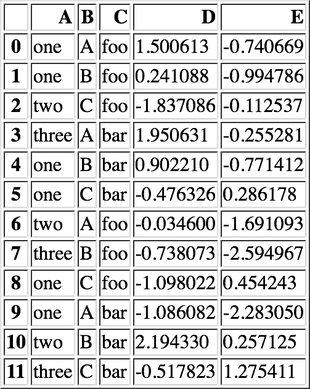
Figure 7: 示例数据
result = pd.pivot_table(df, values='D', index=['A', 'B'], columns=['C']) show_dataframe(result)

Figure 8: 以 A ，B 为行索引，以 C 为列索引的，针对 D 的数据
当透视表结果为多个值的时候，默认返回平均值 ：
result = pd.pivot_table(df, values=['E'], index=['A'], columns=['C']) show_dataframe(result)

Figure 9: 默认计算平均值
针对 A 为 one 的那行数据，其计算过程相当于：
result = df[df.A=='one'].groupby('C')['E'].mean() log("result", result)
==================================== result ==================================== C bar -0.021053 foo 1.062916 Name: E, dtype: float64
2.12 数据分类(astype('category'))
df = pd.DataFrame({"id":[1,2,3,4,5,6], "raw_grade":['a', 'b', 'b', 'a', 'a', 'e']}) df["grade"] = df["raw_grade"].astype("category") show_dataframe(df)
Figure 10: 示例数据
log("df.grade", df.grade) log("df.grade.cat.categories", df.grade.cat.categories)
=================================== df.grade =================================== 0 a 1 b 2 b 3 a 4 a 5 e Name: grade, dtype: category Categories (3, object): [a, b, e] =========================== df.grade.cat.categories ============================ Index(['a', 'b', 'e'], dtype='object')
df.grade.cat.categories = ['very good', 'good', 'bad'] sort_result = df.sort_values(by='grade', ascending=False) show_dataframe(sort_result)
Figure 11: 以 raw_grade 列为排序标准
3 索引
3.1 重新索引
即把索引值进行重新赋值， 以增加一些行的数据 。
3.1.1 Series
s = pd.Series([1, 3, 5, 6, 8], index=list('acefh')) log("s", s)
====================================== s ======================================= a 1 c 3 e 5 f 6 h 8 dtype: int64
log("s.reindex(list('abcdefgh'))", s.reindex(list('abcdefgh')))
========================= s.reindex(list('abcdefgh')) ==========================
a 1.0
b NaN
c 3.0
d NaN
e 5.0
f 6.0
g NaN
h 8.0
dtype: float64
3.1.1.0.1 填充默认值
log("s.reindex(list('abcdefgh'), fill_value=0)", s.reindex(list('abcdefgh'), fill_value=0))
================== s.reindex(list('abcdefgh'), fill_value=0) ===================
a 1
b 0
c 3
d 0
e 5
f 6
g 0
h 8
dtype: int64
3.1.1.0.2 往前填充
log("s.reindex(list('abcdefgh'), method='ffill')", s.reindex(list('abcdefgh'), method='ffill'))
================= s.reindex(list('abcdefgh'), method='ffill') ==================
a 1
b 1
c 3
d 3
e 5
f 6
g 6
h 8
dtype: int64
3.1.1.0.3 往后填充
log("s.reindex(list('abcdefgh'), method='bfill')", s.reindex(list('abcdefgh'), method='bfill'))
================= s.reindex(list('abcdefgh'), method='bfill') ==================
a 1
b 3
c 3
d 5
e 5
f 6
g 8
h 8
dtype: int64
3.1.2 DataFrame
df = pd.DataFrame(np.random.randn(4, 6), index=list('ADFH'), columns=['one', 'two', 'three', 'four', 'five', 'six']) log("df", df)
====================================== df ======================================
one two three four five six
A 0.132692 0.234315 -0.991630 1.230777 1.552560 -1.245982
D -1.378563 1.121745 -0.927618 0.168251 -0.534366 -0.610560
F 0.219192 -0.642972 0.004221 1.705394 -1.237325 -1.022091
H -2.090543 -0.504130 1.401524 -0.433258 1.652494 -1.948064
3.1.2.0.1 对行重新索引
log("df.reindex(index=list('ABCDEFGH'))", df.reindex(index=list('ABCDEFGH')))
====================== df.reindex(index=list('ABCDEFGH')) ======================
one two three four five six
A 0.132692 0.234315 -0.991630 1.230777 1.552560 -1.245982
B NaN NaN NaN NaN NaN NaN
C NaN NaN NaN NaN NaN NaN
D -1.378563 1.121745 -0.927618 0.168251 -0.534366 -0.610560
E NaN NaN NaN NaN NaN NaN
F 0.219192 -0.642972 0.004221 1.705394 -1.237325 -1.022091
G NaN NaN NaN NaN NaN NaN
H -2.090543 -0.504130 1.401524 -0.433258 1.652494 -1.948064
fill method 只对行重新索引有效，不适用列
log("df.reindex(index=list('ABCDEFGH'), method='ffill')", df.reindex(index=list('ABCDEFGH'), method='ffill'))
============== df.reindex(index=list('ABCDEFGH'), method='ffill') ==============
one two three four five six
A 0.132692 0.234315 -0.991630 1.230777 1.552560 -1.245982
B 0.132692 0.234315 -0.991630 1.230777 1.552560 -1.245982
C 0.132692 0.234315 -0.991630 1.230777 1.552560 -1.245982
D -1.378563 1.121745 -0.927618 0.168251 -0.534366 -0.610560
E -1.378563 1.121745 -0.927618 0.168251 -0.534366 -0.610560
F 0.219192 -0.642972 0.004221 1.705394 -1.237325 -1.022091
G 0.219192 -0.642972 0.004221 1.705394 -1.237325 -1.022091
H -2.090543 -0.504130 1.401524 -0.433258 1.652494 -1.948064
3.1.2.0.2 对列重新索引
log("df.reindex(columns=['one', 'three', 'five', 'seven'], fill_value=0)", df.reindex(columns=['one', 'three', 'five', 'seven'], fill_value=0))
===== df.reindex(columns=['one', 'three', 'five', 'seven'], fill_value=0) ======
one three five seven
A 0.132692 -0.991630 1.552560 0
D -1.378563 -0.927618 -0.534366 0
F 0.219192 0.004221 -1.237325 0
H -2.090543 1.401524 1.652494 0
3.2 索引命名
s = pd.Series(np.random.rand(5), index=list('abcde')) df = pd.DataFrame(np.random.randn(4, 3), columns=['one', 'two', 'three']) log("s", s) log("df", df)
====================================== s =======================================
a 0.238992
b 0.060047
c 0.705591
d 0.117159
e 0.796731
dtype: float64
====================================== df ======================================
one two three
0 0.449905 -1.976822 1.146894
1 0.575061 -3.523687 0.736256
2 -0.660648 -0.454135 0.578583
3 -0.850605 -0.916484 -1.413908
log("s.index", s.index) s.index.name = 'alpha' log("s", s)
=================================== s.index ==================================== Index(['a', 'b', 'c', 'd', 'e'], dtype='object') ====================================== s ======================================= alpha a 0.238992 b 0.060047 c 0.705591 d 0.117159 e 0.796731 dtype: float64
log("df.index", df.index) log("df.columns", df.columns) df.index.name = 'row' df.columns.name = 'col' log("df", df)
=================================== df.index =================================== RangeIndex(start=0, stop=4, step=1) ================================== df.columns ================================== Index(['one', 'two', 'three'], dtype='object') ====================================== df ====================================== col one two three row 0 0.449905 -1.976822 1.146894 1 0.575061 -3.523687 0.736256 2 -0.660648 -0.454135 0.578583 3 -0.850605 -0.916484 -1.413908
3.3 重复索引
索引值有重复项的索引
s = pd.Series(np.arange(6), index=list('abcbda')) log("s", s)
====================================== s ======================================= a 0 b 1 c 2 b 3 d 4 a 5 dtype: int64
log("s['a']", s['a']) log("s.index.is_unique", s.index.is_unique)
==================================== s['a'] ==================================== a 0 a 5 dtype: int64 ============================== s.index.is_unique =============================== False
3.3.1 对重复索引的处理（清洗）
sum_result = s.groupby(s.index).sum() # 对重复索引内容进行求和 log("sum_result", sum_result) first_result = s.groupby(s.index).first() # 对重复索引内容只取第一项 log("first_result", first_result) avg_result = s.groupby(s.index).mean() # 对重复索引内容取平均值 log("avg_result", avg_result)
================================== sum_result ================================== a 5 b 4 c 2 d 4 dtype: int64 ================================= first_result ================================= a 0 b 1 c 2 d 4 dtype: int64 ================================== avg_result ================================== a 2.5 b 2.0 c 2.0 d 4.0 dtype: float64
3.4 多级索引
用二维的数据表达更高维度的数据 ，使数据组织方式更清晰，它使用 pd.MultiIndex 类来表示。
3.4.1 层次化索引的作用
比如在分析股票数据：
- 一级行索引可以是日期
- 二级行索引可以是股票代码
- 列索引可以是股票的交易量，开盘价，收盘价等等
这样就可以把多个股票放在同一个时间维度下进行考察和分析。
3.4.2 Series 多级索引
3.4.2.1 创建
a = [['a', 'a', 'a', 'b', 'b', 'c', 'c'], [1, 2, 3, 1, 2, 2, 3]] tuples = list(zip(*a)) log("tuples", tuples) index = pd.MultiIndex.from_tuples(tuples, names=['first', 'second']) log("index", index) s = pd.Series(np.random.randn(7), index=index) log("s", s) log("s.index", s.index) log("s.index.levels[1]", s.index.levels[1])
==================================== tuples ====================================
[('a', 1), ('a', 2), ('a', 3), ('b', 1), ('b', 2), ('c', 2), ('c', 3)]
==================================== index =====================================
MultiIndex(levels=[['a', 'b', 'c'], [1, 2, 3]],
labels=[[0, 0, 0, 1, 1, 2, 2], [0, 1, 2, 0, 1, 1, 2]],
names=['first', 'second'])
====================================== s =======================================
first second
a 1 -0.456506
2 -1.593649
3 -0.911247
b 1 0.588854
2 -1.332917
c 2 -0.314307
3 -0.896183
dtype: float64
=================================== s.index ====================================
MultiIndex(levels=[['a', 'b', 'c'], [1, 2, 3]],
labels=[[0, 0, 0, 1, 1, 2, 2], [0, 1, 2, 0, 1, 1, 2]],
names=['first', 'second'])
============================== s.index.levels[1] ===============================
Int64Index([1, 2, 3], dtype='int64', name='second')
3.4.2.2 选取
log("s['b']", s['b']) log("s['b':'c']", s['b':'c']) log("s[['b', 'a']]", s[['b', 'a']]) log("s['b', 1]", s['b', 1]) log("s[:, 2]", s[:, 2])
==================================== s['b'] ====================================
second
1 0.588854
2 -1.332917
dtype: float64
================================== s['b':'c'] ==================================
first second
b 1 0.588854
2 -1.332917
c 2 -0.314307
3 -0.896183
dtype: float64
================================ s[['b', 'a']] =================================
first second
a 1 -0.456506
2 -1.593649
3 -0.911247
b 1 0.588854
2 -1.332917
dtype: float64
================================== s['b', 1] ===================================
0.5888538972164659
=================================== s[:, 2] ====================================
first
a -1.593649
b -1.332917
c -0.314307
dtype: float64
3.4.3 DataFrame 多级索引
3.4.3.1 创建
df = pd.DataFrame(np.random.randint(1, 10, (4, 3)), # 1-10 之间的随机数，4 行 3 列 index=[['a', 'a', 'b', 'b'], [1, 2, 1, 2]], columns=[['one', 'one', 'two'], ['blue', 'red', 'blue']]) df.index.names = ['row-1', 'row-2'] df.columns.names = ['col-1', 'col-2'] show_dataframe(df)

3.4.3.2 选取
show_dataframe(df.loc['a'])

log("df.loc['a', 1]", df.loc['a', 1])
================================ df.loc['a', 1] ================================
col-1 col-2
one blue 5
red 9
two blue 7
Name: (a, 1), dtype: int64
3.4.3.3 多级索引交换
df2 = df.swaplevel('row-1', 'row-2') show_dataframe(df2)

3.4.3.4 多级索引排序
show_dataframe(df2.sortlevel(0)) # 0 表示根据一级索引进行排序

show_dataframe(df2.sortlevel(1)) # 根据二级索引进行排序

3.4.3.5 多级索引统计
show_dataframe(df.sum(level=0))

show_dataframe(df.sum(level=1))

3.4.3.6 列与索引的转换
创建多级索引比较复杂，一般情况下会从文件中读取一个 DataFrame ， 然后将其中某个列转换为多级索引，最终得到一个基于多级索引的 DataFrame 。
df = pd.DataFrame({ 'a': range(7), 'b': range(7, 0, -1), 'c': ['one', 'one', 'one', 'two', 'two', 'two', 'two'], 'd': [0, 1, 2, 0, 1, 2, 3] }) show_dataframe(df)

3.4.3.6.1 列转换为索引
show_dataframe(df.set_index('c'))

df2 = df.set_index(['c', 'd']) show_dataframe(df2)

3.4.3.6.2 索引转换为列
将所有索引转换为列
show_dataframe(df2.reset_index().sort_index('columns'))

4 分组与聚合
df = pd.DataFrame({'key1': ['a', 'a', 'b', 'b', 'a'], 'key2': ['one', 'two', 'one', 'two', 'one'], 'data1': np.random.randint(1, 10, 5), 'data2': np.random.randint(1, 10, 5)}) show_dataframe(df)

4.1 原理
三步曲：
- 拆分：根据什么进行分组
- 应用：每个分组进行什么样的计算（每个组应用一个 计算规则 ，输出一个结果）
- 聚合：把每个分组的计算结果合并起来，构成最终输出
4.2 分组
4.2.1 对 Series 进行分组
通过索引对齐关联起来
grouped = df['data1'].groupby(df['key1']) log("grouped", grouped) # groupby 对象 log("grouped.mean()", grouped.mean()) key = [1, 2, 1, 2, 1] log("df['data1'].groupby(key)", df['data1'].groupby(key))
=================================== grouped ==================================== <pandas.core.groupby.SeriesGroupBy object at 0x11024f978> ================================ grouped.mean() ================================ key1 a 4.0 b 4.5 Name: data1, dtype: float64 =========================== df['data1'].groupby(key) =========================== <pandas.core.groupby.SeriesGroupBy object at 0x1130f8518>
log("df['data1'].groupby([df['key1'], df['key2']]).mean()", df['data1'].groupby([df['key1'], df['key2']]).mean()) log("df['data1'].groupby([df['key1'], df['key2']]).size()", df['data1'].groupby([df['key1'], df['key2']]).size())
============= df['data1'].groupby([df['key1'], df['key2']]).mean() =============
key1 key2
a one 4
two 4
b one 8
two 1
Name: data1, dtype: int64
============= df['data1'].groupby([df['key1'], df['key2']]).size() =============
key1 key2
a one 2
two 1
b one 1
two 1
Name: data1, dtype: int64
4.2.2 对 DataFrame 进行分组（默认按行分组）
show_dataframe(df.groupby('key1').mean())

df1 = df.groupby(['key1', 'key2']).mean() show_dataframe(df1)

4.2.3 对分组对象进行迭代
for name, group in df.groupby('key1'): print(name) print(group) print('='*80) for name, group in df.groupby(['key1', 'key2']): print(name) print(group)
a
data1 data2 key1 key2
0 1 8 a one
1 4 4 a two
4 7 4 a one
b
data1 data2 key1 key2
2 8 8 b one
3 1 8 b two
================================================================================
('a', 'one')
data1 data2 key1 key2
0 1 8 a one
4 7 4 a one
('a', 'two')
data1 data2 key1 key2
1 4 4 a two
('b', 'one')
data1 data2 key1 key2
2 8 8 b one
('b', 'two')
data1 data2 key1 key2
3 1 8 b two
4.2.4 通过字典进行分组
df = pd.DataFrame(np.random.randint(1, 10, (5, 5)), columns=['a', 'b', 'c', 'd', 'e'], index=['Alice', 'Bob', 'Candy', 'Dark', 'Emily']) df.iloc[1, 1:3] = np.NaN show_dataframe(df)
mapping = {'a': 'red', 'b': 'red', 'c': 'blue', 'd': 'orange', 'e': 'blue'} grouped = df.groupby(mapping, axis=1) # 按列分组 show_dataframe(grouped.sum())

show_dataframe(grouped.count())

log("grouped.size()", grouped.size())
================================ grouped.size() ================================ blue 2 orange 1 red 2 dtype: int64
4.2.5 通过函数分组
当函数作为分组依据时，数据表里的每个索引（可以是行索引，也可以是列索引）都会调用一次函数， 函数的返回值作为分组的索引 ，即相同的返回值分在同一组。
df = pd.DataFrame(np.random.randint(1, 10, (5, 5)), columns=['a', 'b', 'c', 'd', 'e'], index=['Alice', 'Bob', 'Candy', 'Dark', 'Emily']) show_dataframe(df)

Figure 29: 示例数据
def _dummy_group(idx): print("idx:", idx) return idx print("axis=0") df.groupby(_dummy_group) print("axis=1") df.groupby(_dummy_group, axis=1)
axis=0 idx: Alice idx: Bob idx: Candy idx: Dark idx: Emily axis=1 idx: a idx: b idx: c idx: d idx: e
grouped = df.groupby(len) show_dataframe(grouped.sum())

4.2.6 多级索引数据根据索引级别来分组
columns = pd.MultiIndex.from_arrays([['China', 'USA', 'China', 'USA', 'China'], ['A', 'A', 'B', 'C', 'B']], names=['country', 'index']) df = pd.DataFrame(np.random.randint(1, 10, (5, 5)), columns=columns) show_dataframe(df)

Figure 31: 示例数据
show_dataframe(df.groupby(level='country', axis=1).count())

show_dataframe(df.groupby(level='country', axis=1).sum())

show_dataframe(df.groupby(level='index', axis=1).count())

4.3 数据聚合
df = pd.DataFrame({'key1': ['a', 'a', 'b', 'b', 'a'], 'key2': ['one', 'two', 'one', 'two', 'one'], 'data1': np.random.randint(1, 10, 5), 'data2': np.random.randint(1, 10, 5), 'data3': np.random.randint(1, 10, 5)}) show_dataframe(df)

Figure 35: 示例数据
4.3.1 内置聚合函数
4.3.1.1 sum
show_dataframe(df.groupby('key1').sum())

Figure 36: sum
4.3.1.2 mean
show_dataframe(df.groupby('key1').mean())

Figure 37: mean
4.3.1.3 size
log("df.groupby('key1').size()", df.groupby('key1').size())
========================== df.groupby('key1').size() ===========================
key1
a 3
b 2
dtype: int64
4.3.1.4 count
show_dataframe(df.groupby('key1').count())
Figure 38: count
4.3.1.5 min/max
show_dataframe(df.groupby('key1').min())

Figure 39: min
4.3.1.6 describe
show_dataframe(df.groupby('key1').describe())

Figure 40: describe
4.3.2 自定义聚合函数
自定义聚合函数时，需使用 agg() 或 aggregate() 函数。
def peak_range(s): print(s) print(type(s)) print('=====') return s.max() - s.min() grouped = df.groupby('key1') result = grouped.agg(peak_range)
0 7 1 1 4 5 Name: data1, dtype: int64 <class 'pandas.core.series.Series'> ===== 2 3 3 8 Name: data1, dtype: int64 <class 'pandas.core.series.Series'> ===== 0 5 1 8 4 3 Name: data2, dtype: int64 <class 'pandas.core.series.Series'> ===== 2 5 3 7 Name: data2, dtype: int64 <class 'pandas.core.series.Series'> ===== 0 3 1 5 4 4 Name: data3, dtype: int64 <class 'pandas.core.series.Series'> ===== 2 8 3 2 Name: data3, dtype: int64 <class 'pandas.core.series.Series'> ===== 0 one 1 two 4 one Name: key2, dtype: object <class 'pandas.core.series.Series'> ===== 0 one 1 two 4 one Name: key2, dtype: object <class 'pandas.core.series.Series'> ===== 0 one 1 two 4 one Name: a, dtype: object <class 'pandas.core.series.Series'> ===== 0 one 1 two 4 one Name: a, dtype: object <class 'pandas.core.series.Series'> =====
show_dataframe(result)
4.3.3 应用多个聚合函数
show_dataframe(grouped.agg(['std', 'mean', peak_range]))
Figure 42: 多个聚合函数
4.3.4 给聚合后的列起别名
show_dataframe(grouped.agg(['std', 'mean', ('high-low', peak_range)]))

Figure 43: 别名
4.3.5 自定义需要显示的列
show_dataframe(grouped.sum())

Figure 44: 所有列
show_dataframe(grouped['data1', 'data3'].sum())
Figure 45: 自定义后的列
4.3.6 给不同的列应用不同的聚合函数
使用 dict 作为参数来实现，此方法也能实现自定义需要显示的列。
d = {'data1': ['mean', peak_range, 'max', 'min'], 'data2': 'sum'} show_dataframe(grouped.agg(d))

Figure 46: 不同的聚合函数
4.3.7 索引重置
# 等效于 df.groupby('key1', as_index=False).agg(d) show_dataframe(grouped.agg(d).reset_index())

Figure 47: reset_index 效果
4.3.8 transform
transform_func 作用的是分组后每个列上的数据（Series）， 运算结果是 Series ，不是标量。

Figure 48: transform 原理
4.3.8.1 案例一（给每行都添加一个分组后的平均值）
df = pd.DataFrame({'key1': ['a', 'a', 'b', 'b', 'a'], 'key2': ['one', 'two', 'one', 'two', 'one'], 'data1': np.random.randint(1, 10, 5), 'data2': np.random.randint(1, 10, 5)}) show_dataframe(df)

Figure 49: 示例数据
4.3.8.1.1 使用 merge 实现
k1_mean = df.groupby('key1').mean().add_prefix('mean_') show_dataframe(k1_mean)
Figure 50: 先求平均值
show_dataframe(pd.merge(df, k1_mean, left_on='key1', right_index=True))
Figure 51: 使用 merge
4.3.8.1.2 使用 transform 实现
k1_mean = df.groupby('key1').transform(np.mean).add_prefix('mean_') show_dataframe(k1_mean)

Figure 52: 使用 transform 计算平均值
df[k1_mean.columns] = k1_mean
show_dataframe(df)

Figure 53: 将 k1_mean 附加到原 dataframe 中
4.3.8.2 案例二（计算分组后每个值与平均值的差异）
df = pd.DataFrame(np.random.randint(1, 10, (5, 5)), columns=['a', 'b', 'c', 'd', 'e'], index=['Alice', 'Bob', 'Candy', 'Dark', 'Emily']) show_dataframe(df)
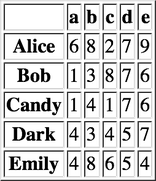
Figure 54: 示例数据
def demean(s): return s - s.mean() key = ['one', 'one', 'two', 'one', 'two'] demeaned = df.groupby(key).transform(demean) show_dataframe(demeaned)

Figure 55: 均值差
4.3.9 apply
DataFrame 的 apply 函数是逐行或逐列来处理数据。GroupBy 的 apply 函数对每个分组进行计算。
apply_func 作用的是分组后每个 group 对象。

Figure 56: apply 原理
df = pd.DataFrame({'key1': ['a', 'a', 'b', 'b', 'a', 'a', 'a', 'b', 'b', 'a'], 'key2': ['one', 'two', 'one', 'two', 'one', 'one', 'two', 'one', 'two', 'one'], 'data1': np.random.randint(1, 10, 10), 'data2': np.random.randint(1, 10, 10)}) show_dataframe(df)
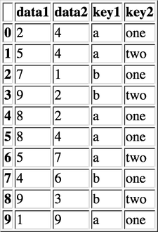
Figure 57: 示例数据
4.3.9.1 案例一（根据 column 排序，输出其最大的 n 行数据）
def top(df, n=2, column='data1'): return df.sort_values(by=column, ascending=False)[:n] show_dataframe(df.groupby('key1').apply(top)) # 可以传递参数：df.groupby('key1').apply(top, n=3, column='data2')

Figure 58: 输出 n 行
禁用分组键：
show_dataframe(df.groupby('key1', group_keys=False).apply(top))
Figure 59: 禁用分组键
4.3.9.2 案例二（用不同的分组平均值填充空缺数据）
states = ['Ohio', 'New York', 'Vermont', 'Florida', 'Oregon', 'Nevada', 'California', 'Idaho'] group_key = ['East'] * 4 + ['West'] * 4 data = pd.Series(np.random.randn(8), index=states) data[['Vermont', 'Nevada', 'Idaho']] = np.nan log("data", data) fill_mean = lambda g: g.fillna(g.mean()) result = data.groupby(group_key).apply(fill_mean) log("result", result)
===================================== data ===================================== Ohio -0.560060 New York -1.523848 Vermont NaN Florida 0.167729 Oregon 1.136213 Nevada NaN California 1.016381 Idaho NaN dtype: float64 ==================================== result ==================================== Ohio -0.560060 New York -1.523848 Vermont -0.638726 Florida 0.167729 Oregon 1.136213 Nevada 1.076297 California 1.016381 Idaho 1.076297 dtype: float64
5 处理丢失数据
dates = pd.date_range('20160301', periods=6) df = pd.DataFrame(data=np.random.randn(6, 4), index=dates, columns=list('ABCD')) df1 = df.reindex(index=dates[0:4], columns=list(df.columns) + ['E']) df1.loc[dates[1:3], 'E'] = 1 log("df1", df1)
===================================== df1 ======================================
A B C D E
2016-03-01 0.907432 -0.722445 1.483633 -0.632679 NaN
2016-03-02 -0.029204 1.139868 0.242871 1.381616 1.0
2016-03-03 -1.730010 -0.486562 1.604021 -0.168732 1.0
2016-03-04 -1.098692 -0.961688 -1.181290 0.631278 NaN
5.1 丢弃 NaN 行
log("df1.dropna(how='any')", df1.dropna(how='any'))
============================ df1.dropna(how='any') =============================
A B C D E
2016-03-02 -0.029204 1.139868 0.242871 1.381616 1.0
2016-03-03 -1.730010 -0.486562 1.604021 -0.168732 1.0
5.2 用默认值替换 NaN
log("df1.fillna(value=5)", df1.fillna(value=5))
============================= df1.fillna(value=5) ==============================
A B C D E
2016-03-01 0.907432 -0.722445 1.483633 -0.632679 5.0
2016-03-02 -0.029204 1.139868 0.242871 1.381616 1.0
2016-03-03 -1.730010 -0.486562 1.604021 -0.168732 1.0
2016-03-04 -1.098692 -0.961688 -1.181290 0.631278 5.0
5.3 判断数据集是否包含 NaN
log("pd.isnull(df1)", pd.isnull(df1)) log("pd.isnull(df1).any()", pd.isnull(df1).any()) log("pd.isnull(df1).any().any()", pd.isnull(df1).any().any())
================================ pd.isnull(df1) ================================
A B C D E
2016-03-01 False False False False True
2016-03-02 False False False False False
2016-03-03 False False False False False
2016-03-04 False False False False True
============================= pd.isnull(df1).any() =============================
A False
B False
C False
D False
E True
dtype: bool
========================== pd.isnull(df1).any().any() ==========================
True
5.4 NaN 不参与运算
log("df1.mean()", df1.mean()) log("df1.mean(axis=1)", df1.mean(axis=1))
================================== df1.mean() ================================== A -0.487618 B -0.257707 C 0.537309 D 0.302871 E 1.000000 dtype: float64 =============================== df1.mean(axis=1) =============================== 2016-03-01 0.258985 2016-03-02 0.747030 2016-03-03 0.043743 2016-03-04 -0.652598 Freq: D, dtype: float64
log("df1.sum()", df1.sum()) log("df1.sum(axis=1)", df1.sum(axis=1))
================================== df1.sum() =================================== A -1.950474 B -1.030827 C 2.149235 D 1.211483 E 2.000000 dtype: float64 =============================== df1.sum(axis=1) ================================ 2016-03-01 1.035941 2016-03-02 3.735150 2016-03-03 0.218717 2016-03-04 -2.610392 Freq: D, dtype: float64
s = pd.Series([1,3,5,np.nan,6,8], index=dates).shift(2) log("s", s) log("df", df) log("df.sub(s, axis='index')", df.sub(s, axis='index'))
====================================== s =======================================
2016-03-01 NaN
2016-03-02 NaN
2016-03-03 1.0
2016-03-04 3.0
2016-03-05 5.0
2016-03-06 NaN
Freq: D, dtype: float64
====================================== df ======================================
A B C D
2016-03-01 0.907432 -0.722445 1.483633 -0.632679
2016-03-02 -0.029204 1.139868 0.242871 1.381616
2016-03-03 -1.730010 -0.486562 1.604021 -0.168732
2016-03-04 -1.098692 -0.961688 -1.181290 0.631278
2016-03-05 0.122898 -0.399110 -0.873445 1.010379
2016-03-06 -0.922243 -0.233060 -2.345940 -1.140216
=========================== df.sub(s, axis='index') ============================
A B C D
2016-03-01 NaN NaN NaN NaN
2016-03-02 NaN NaN NaN NaN
2016-03-03 -2.730010 -1.486562 0.604021 -1.168732
2016-03-04 -4.098692 -3.961688 -4.181290 -2.368722
2016-03-05 -4.877102 -5.399110 -5.873445 -3.989621
2016-03-06 NaN NaN NaN NaN
6 时间序列
6.1 固定时刻(pd.Timestamp)
6.1.1 日期范围(data_range)
6.1.1.1 小时
pd.date_range(start='20160320', periods=10, freq='4H')
6.1.1.2 日
pd.date_range('20160320', '20160331') pd.date_range(start='20160320', periods=10)
6.1.1.3 星期
pd.date_range(start='20160320', periods=10, freq='W')
6.1.1.4 月
pd.date_range(start='20160320', periods=10, freq='M')
6.1.1.5 每个月最后一个工作日组成的索引
pd.date_range(start='20160320', periods=10, freq='BM')
6.1.1.6 规则化时间戳
pd.date_range(start='2016-03-20 16:23:32', periods=10, normalize=True)
6.2 固定时期(pd.Period)
pd.Period 表示时期，比如几日，月或几个月等。比如用来统计每个月的销售额，就可以用时期作为单位。
6.2.1 运算
p1 = pd.Period(2010) p2 = p1 + 2 p3 = pd.Period(2016, freq='M') log("p1", p1) log("p2", p2) log("p3", p3) log("p2 - p1", p2 - p1) log("p3 + 3", p3 + 3)
====================================== p1 ====================================== 2010 ====================================== p2 ====================================== 2012 ====================================== p3 ====================================== 2016-01 =================================== p2 - p1 ==================================== 2 ==================================== p3 + 3 ==================================== 2016-04
6.2.2 时期范围
6.2.2.1 月
pd.period_range(start='2016-01', periods=12, freq='M') pd.period_range(start='2016-01', end='2016-10', freq='M')
6.2.2.2 季度
pd.period_range(start='2016Q1', periods=10, freq='Q')
6.2.3 频率转换
- A-DEC
- 以 12 月份作为结束的年时期
- A-NOV
- 以 11 月份作为结束的年时期
- Q-DEC
- 以 12 月份作为结束的季度时期
6.2.3.1 年转月
p = pd.Period('2016', freq='A-DEC') log("p.asfreq('M', how='start')", p.asfreq('M', how='start')) log("p.asfreq('M', how='end')", p.asfreq('M', how='end'))
========================== p.asfreq('M', how='start') ==========================
2016-01
=========================== p.asfreq('M', how='end') ===========================
2016-12
6.2.3.2 指定年的结束月份
p = pd.Period('2016-04', freq='M') # 以年为周期，以一年中的 3 月份作为年的结束（财年） log("p.asfreq('A-MAR')", p.asfreq('A-MAR'))
============================== p.asfreq('A-MAR') ===============================
2017
p = pd.Period('2016Q4', 'Q-JAN') # 以 1 月份结束的财年中，2016Q4 的时期是指 2015-11-1 到 2016-1-31 log("p.asfreq('D', how='start')", p.asfreq('D', how='start')) log("p.asfreq('D', how='end')", p.asfreq('D', how='end')) # 获取该季度倒数第二个工作日下午4点的时间戳 p4pm = (p.asfreq('B', how='end') - 1).asfreq('T', 'start') + 16 * 60 log("p4pm", p4pm) log("p4pm.to_timestamp()", p4pm.to_timestamp())
========================== p.asfreq('D', how='start') ==========================
2015-11-01
=========================== p.asfreq('D', how='end') ===========================
2016-01-31
===================================== p4pm =====================================
2016-01-28 16:00
============================= p4pm.to_timestamp() ==============================
2016-01-28 16:00:00
6.3 Timestamp 和 Period 相互转换
ts = pd.Series(np.random.randn(5), index = pd.date_range('2016-01-01', periods=5, freq='M')) log("ts", ts) log("ts.to_period()", ts.to_period())
====================================== ts ====================================== 2016-01-31 -0.156601 2016-02-29 0.440694 2016-03-31 0.500862 2016-04-30 0.138647 2016-05-31 -0.374922 Freq: M, dtype: float64 ================================ ts.to_period() ================================ 2016-01 -0.156601 2016-02 0.440694 2016-03 0.500862 2016-04 0.138647 2016-05 -0.374922 Freq: M, dtype: float64
ts = pd.Series(np.random.randn(5), index = pd.date_range('2016-12-29', periods=5, freq='D')) log("ts", ts) pts = ts.to_period(freq='M') log("pts", pts) log("pts.groupby(level=0).sum()", pts.groupby(level=0).sum()) log("pts.to_timestamp(how='end')", pts.to_timestamp(how='end'))
====================================== ts ====================================== 2016-12-29 1.628716 2016-12-30 1.209859 2016-12-31 1.938348 2017-01-01 -0.175764 2017-01-02 -1.265638 Freq: D, dtype: float64 ===================================== pts ====================================== 2016-12 1.628716 2016-12 1.209859 2016-12 1.938348 2017-01 -0.175764 2017-01 -1.265638 Freq: M, dtype: float64 ========================== pts.groupby(level=0).sum() ========================== 2016-12 4.776922 2017-01 -1.441402 Freq: M, dtype: float64 ========================= pts.to_timestamp(how='end') ========================== 2016-12-31 1.628716 2016-12-31 1.209859 2016-12-31 1.938348 2017-01-31 -0.175764 2017-01-31 -1.265638 dtype: float64
6.4 重采样
6.4.1 降采样（高频率 -> 低频率）
如 5 分钟股票交易数据转换为日交易数据
ts = pd.Series(np.random.randint(0, 50, 60), index=pd.date_range('2016-04-25 09:30', periods=60, freq='T')) log("ts.head(10)", ts.head(10))
================================= ts.head(10) ================================== 2016-04-25 09:30:00 10 2016-04-25 09:31:00 18 2016-04-25 09:32:00 20 2016-04-25 09:33:00 43 2016-04-25 09:34:00 17 2016-04-25 09:35:00 40 2016-04-25 09:36:00 10 2016-04-25 09:37:00 49 2016-04-25 09:38:00 29 2016-04-25 09:39:00 0 Freq: T, dtype: int64
6.4.1.1 起始时间为行索引
log("ts.resample('5min', how='sum')", ts.resample('5min', how='sum'))
======================== ts.resample('5min', how='sum') ========================
2016-04-25 09:30:00 108
2016-04-25 09:35:00 128
2016-04-25 09:40:00 113
2016-04-25 09:45:00 66
2016-04-25 09:50:00 136
2016-04-25 09:55:00 199
2016-04-25 10:00:00 51
2016-04-25 10:05:00 135
2016-04-25 10:10:00 91
2016-04-25 10:15:00 153
2016-04-25 10:20:00 147
2016-04-25 10:25:00 131
Freq: 5T, dtype: int64
/Users/haoruan/Desktop/workspace/py3.5.3_env/lib/python3.5/site-packages/ipykernel_launcher.py:1: FutureWarning: how in .resample() is deprecated
the new syntax is .resample(...).sum()
"""Entry point for launching an IPython kernel.
6.4.1.2 结束时间为行索引
log("ts.resample('5min', how='sum', label='right')", ts.resample('5min', how='sum', label='right'))
================ ts.resample('5min', how='sum', label='right') =================
2016-04-25 09:35:00 108
2016-04-25 09:40:00 128
2016-04-25 09:45:00 113
2016-04-25 09:50:00 66
2016-04-25 09:55:00 136
2016-04-25 10:00:00 199
2016-04-25 10:05:00 51
2016-04-25 10:10:00 135
2016-04-25 10:15:00 91
2016-04-25 10:20:00 153
2016-04-25 10:25:00 147
2016-04-25 10:30:00 131
Freq: 5T, dtype: int64
/Users/haoruan/Desktop/workspace/py3.5.3_env/lib/python3.5/site-packages/ipykernel_launcher.py:2: FutureWarning: how in .resample() is deprecated
the new syntax is .resample(...).sum()
6.4.1.3 OHLC 重采样
金融数据专用：Open/High/Low/Close
show_dataframe(ts.resample('5min', how='ohlc'))
Figure 60: ohlc
6.4.2 升采样/插值（低频率 -> 高频率）
# 以周为单位，每周五采样 df = pd.DataFrame(np.random.randint(1, 50, 2), index=pd.date_range('2016-04-22', periods=2, freq='W-FRI')) show_dataframe(df)
Figure 61: 示例数据
show_dataframe(df.resample('D'))
Figure 62: 周->天
show_dataframe(df.resample('D', fill_method='ffill', limit=3))
Figure 63: 向前插值
show_dataframe(df.resample('W-MON', fill_method='ffill'))
Figure 64: 以周为单位，每周一采样
6.5 时期重采样
df = pd.DataFrame(np.random.randint(2, 30, (24, 4)), index=pd.period_range('2015-01', '2016-12', freq='M'), columns=list('ABCD')) show_dataframe(df)
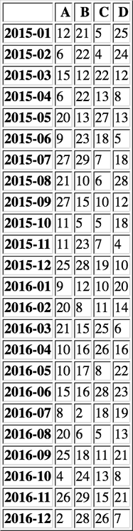
Figure 65: 示例数据
6.5.1 降采样
adf = df.resample('A-DEC', how='mean') show_dataframe(adf)
Figure 66: 年重采样 (a)
show_dataframe(df.resample('A-MAY', how='mean'))
Figure 67: 年重采样 (b)
6.5.2 升采样
show_dataframe(adf.resample('Q-DEC'))
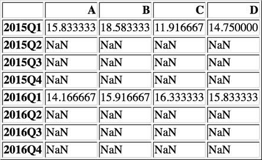
Figure 68: 默认升采样行为
show_dataframe(adf.resample('Q-DEC', fill_method='ffill'))
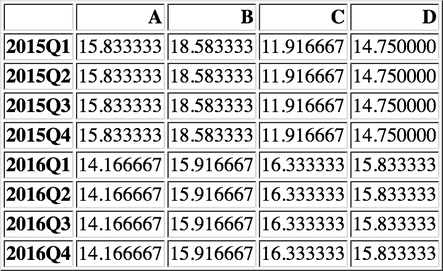
Figure 69: 向前插值
6.6 从文件中读取日期序列
pd.read_csv('xxx.csv', index_col='xxx', parse_dates=True)
6.6.1 自定义时间日期解析函数
def date_parser(s): s = '2016/' + s d = datetime.strptime(s, '%Y/%m/%d') return d pd.read_csv('xxx.csv', index_col='xxx', parse_dates=True, date_parser=date_parser)
7 可视化
7.1 线形图
ts = pd.Series(np.random.randn(1000), index=pd.date_range('20000101', periods=1000)) ts = ts.cumsum() ts.plot() plot()

Figure 70: 单个线形图
ts.plot(title='cumsum', style='r-', ylim=[-30, 50], figsize=(4, 3)); plot()
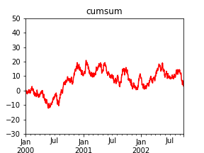
Figure 71: 自定义线形图
df = pd.DataFrame(np.random.randn(1000, 4), index=ts.index, columns=list('ABCD')) df = df.cumsum() df.plot() plot()
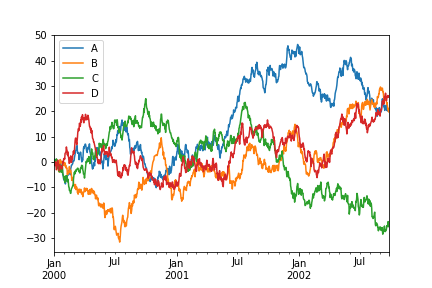
Figure 72: 多个线形图组合
df.plot(title='DataFrame cumsum', figsize=(6, 12), subplots=True, sharex=True, sharey=True) plot()
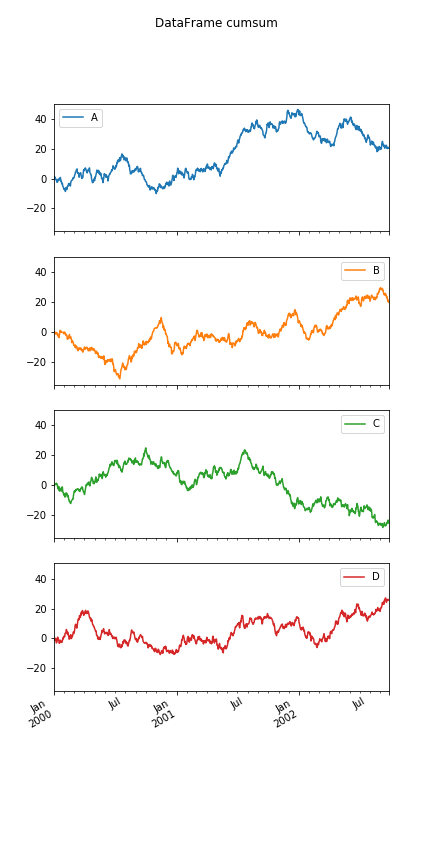
Figure 73: subplot
df['I'] = np.arange(len(df)) df.plot(x='I', y=['A', 'C']) plot()
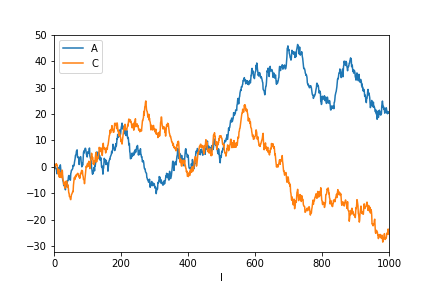
Figure 74: 自定义坐标
7.2 柱状图
df = pd.DataFrame(np.random.rand(10, 4), columns=['A', 'B', 'C', 'D']) show_dataframe(df)
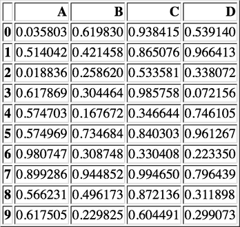
Figure 75: 示例数据
df.iloc[1].plot(kind='bar')
plot()
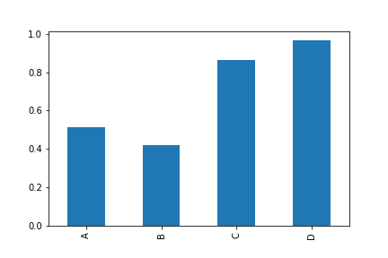
Figure 76: 单个柱状图
df.plot.bar() plot()
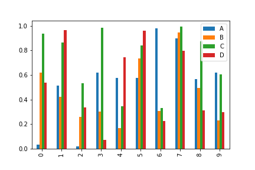
Figure 77: 多个柱状图组合
df.plot.bar(stacked=True)
plot()
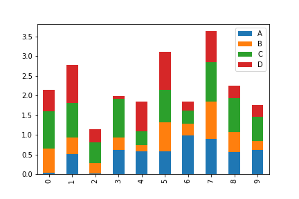
Figure 78: stacked
df.plot.barh(stacked=True)
plot()
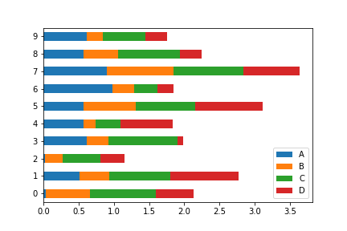
Figure 79: 水平柱状图
7.3 直方图
直方图是一种对值频率进行离散化的柱状图。 数据点被分到离散的，间隔均匀的区间中，绘制各个区间中数据点的数据。
df = pd.DataFrame({'a': np.random.randn(1000) + 1, 'b': np.random.randn(1000), 'c': np.random.randn(1000) - 1}, columns=['a', 'b', 'c']) show_dataframe(df.head())
Figure 80: 示例数据
df['a'].plot.hist(bins=20)
plot()
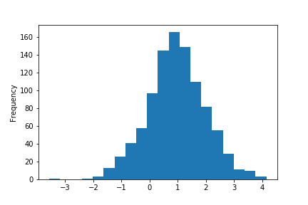
Figure 81: 单个直方图
df.plot.hist(subplots=True, sharex=True, sharey=True, bins=20) plot()
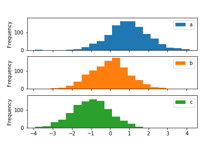
Figure 82: subplot
df.plot.hist(alpha=0.5) plot()
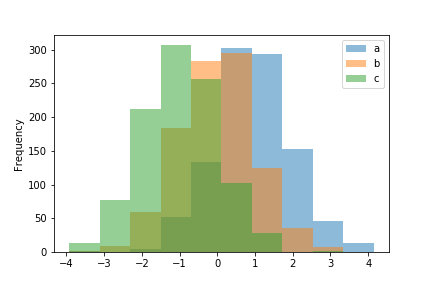
Figure 83: 透明度
df.plot.hist(stacked=True, bins=20, grid=True) plot()
Figure 84: stack
7.3.1 密度图
正态分布（高斯分布）就是一种自然界中广泛存在密度图。
df['a'].plot.kde()
plot()
Figure 85: 单个密度图
df.plot.kde() plot()

Figure 86: 多个密度图组合
7.3.2 带密度估计的直方图
n1 = np.random.normal(0, 1, size=200) # N(0, 1) n2 = np.random.normal(10, 2, size=200) # N(10, 4) s = pd.Series(np.concatenate([n1, n2]))
s.plot.hist(bins=100, alpha=0.5, normed=True) s.plot.kde(style='r-') plot()
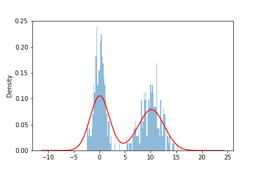
Figure 87: 密度估计&直方图
7.4 散布图
散布图是把所有的点画在同一个坐标轴上的图像。是观察两个一维数据之间关系的有效的手段。
df = pd.DataFrame({'a': np.concatenate([np.random.normal(0, 1, 200), np.random.normal(6, 1, 200)]), 'b': np.concatenate([np.random.normal(10, 2, 200), np.random.normal(0, 2, 200)]), 'c': np.concatenate([np.random.normal(10, 4, 200), np.random.normal(0, 4, 200)])}) df.plot.scatter(x='a', y='b') plot()
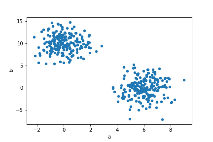
Figure 88: 散布图
7.5 饼图
s = pd.Series(3 * np.random.rand(4), index=['a', 'b', 'c', 'd'], name='series') s.plot.pie(figsize=(6,6)) plot()
Figure 89: 饼图
s.plot.pie(labels=['AA', 'BB', 'CC', 'DD'], colors=['r', 'g', 'b', 'c'], autopct='%.2f', fontsize=20, figsize=(6, 6)) plot()
Figure 90: 自定义
df = pd.DataFrame(3 * np.random.rand(4, 2), index=['a', 'b', 'c', 'd'], columns=['x', 'y']) df.plot.pie(subplots=True, figsize=(9, 4)) plot()
Figure 91: 多个饼图组合
7.6 高级绘图函数
各种高级绘图函数在 pandas.tools.plotting 包里
from pandas.tools.plotting import scatter_matrix df = pd.DataFrame(np.random.randn(1000, 4), columns=['a', 'b', 'c', 'd']) scatter_matrix(df, alpha=0.2, figsize=(6, 6), diagonal='kde') plot()
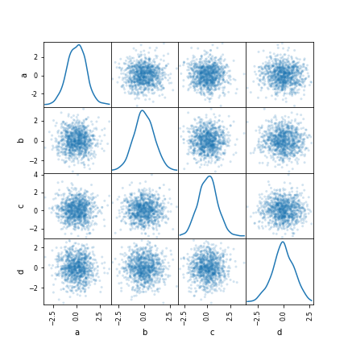
Figure 92: scatter matrix
from pandas.tools.plotting import lag_plot s = pd.Series(0.1 * np.random.rand(1000) + 0.9 * np.sin(np.linspace(-99 * np.pi, 99 * np.pi, num=1000))) lag_plot(s) plot()
Figure 93: lag
from pandas.tools.plotting import autocorrelation_plot s = pd.Series(0.7 * np.random.rand(1000) + 0.3 * np.sin(np.linspace(-9 * np.pi, 9 * np.pi, num=1000))) autocorrelation_plot(s) plot()
Figure 94: auto correlation
8 导入导出
8.1 读入 csv
show_dataframe(pd.read_csv('data/ex1.csv'))
Figure 95: 读入 csv
8.1.1 处理列名缺失
show_dataframe(pd.read_csv('data/ex2.csv', header=None, names=['a', 'b', 'c', 'd', 'msg']))
Figure 96: 列名缺失
8.1.2 指定某一列作为行索引
show_dataframe(pd.read_csv('data/ex2.csv', header=None, names=['a', 'b', 'c', 'd', 'msg'], index_col='msg')) # 多级行索引：index_col=['msg', 'a']
Figure 97: 指定行索引
8.1.3 处理不规则分隔符
show_dataframe(pd.read_table('data/ex3.csv', sep='\s+'))
Figure 98: 处理不规则分隔符
8.1.4 处理缺失值
show_dataframe(pd.read_csv('data/ex5.csv'))
Figure 99: 缺失值默认处理
show_dataframe(pd.read_csv('data/ex5.csv', na_values=['NA', 'NULL', 'foo']))
Figure 100: 指定缺失值
show_dataframe(pd.read_csv('data/ex5.csv', na_values={'message': ['foo', 'NA'], 'something': ['two']}))
Figure 101: 根据列指定缺失值
8.1.5 逐块读取
8.1.5.1 按行读取
show_dataframe(pd.read_csv('data/ex6.csv', skiprows=10, nrows=10))
Figure 102: 指定读取几行
8.1.5.2 按 chunk 读取
dfs = pd.read_csv('data/ex6.csv', chunksize=1000) key_count = pd.Series([]) for df in dfs: key_count = key_count.add(df['key'].value_counts(), fill_value=0) key_count = key_count.sort_values(ascending=False) log("key_count[:3]", key_count[:3])
================================ key_count[:3] ================================= E 368.0 X 364.0 L 346.0 dtype: float64
8.2 导出 csv
df = pd.read_csv('data/ex5.csv')
8.2.1 不导出索引（推荐）
df.to_csv('/tmp/ex5_out.csv', index=False)
8.2.2 不导出列名
df.to_csv('/tmp/ex5_out_noheader.csv', index=False, header=None)
8.2.3 指定分隔符
df.to_csv('/tmp/ex5_out_sep.csv', index=False, sep='|')
8.2.4 导出部分列
df.to_csv('/tmp/ex5_out_col.csv', index=False, columns=['a', 'b', 'message'])
8.3 其他格式
- HDF5
- HDF5 是个 C 语言实现的库，可以高效地读取磁盘上的二进制存储的科学数据
- Excel
-
pd.read_excel,pd.ExcelFile,pd.ExcelWriter - JSON
- 通过 json 模块转换为字典，再转换为 DataFrame
- SQL 数据库
- 通过
pd.io.sql模块来从数据库读取数据 - NoSQL 数据库
- 需要结合相应的数据库模块，如 pymongo 。通过游标把数据读出来，再转换为 DataFrame
9 示例工程
9.1 电影数据分析
9.1.1 数据读取
user_names = ['user_id', 'gender', 'age', 'occupation', 'zip'] users = pd.read_table('data/ml-1m/users.dat', sep='::', header=None, names=user_names, engine='python') rating_names = ['user_id', 'movie_id', 'rating', 'timestamp'] ratings = pd.read_table('data/ml-1m/ratings.dat', sep='::', header=None, names=rating_names, engine='python') movie_names = ['movie_id', 'title', 'genres'] movies = pd.read_table('data/ml-1m/movies.dat', sep='::', header=None, names=movie_names, engine='python') log("users.head()", users.head()) log("ratings.head()", ratings.head()) log("movies.head()", movies.head())
================================= users.head() ================================= user_id gender age occupation zip 0 1 F 1 10 48067 1 2 M 56 16 70072 2 3 M 25 15 55117 3 4 M 45 7 02460 4 5 M 25 20 55455 ================================ ratings.head() ================================ user_id movie_id rating timestamp 0 1 1193 5 978300760 1 1 661 3 978302109 2 1 914 3 978301968 3 1 3408 4 978300275 4 1 2355 5 978824291 ================================ movies.head() ================================= movie_id title genres 0 1 Toy Story (1995) Animation|Children's|Comedy 1 2 Jumanji (1995) Adventure|Children's|Fantasy 2 3 Grumpier Old Men (1995) Comedy|Romance 3 4 Waiting to Exhale (1995) Comedy|Drama 4 5 Father of the Bride Part II (1995) Comedy
9.1.2 数据合并 (merge)
在 pandas 中，数据只有合并后才能进行分析
data = pd.merge(pd.merge(users, ratings), movies)
show_dataframe(data.head())

9.1.3 按性别查看各个电影的平均评分 (pivot_table)
关心的值 是 rating ，以 title 作为 行索引 ，gender 作为 列索引
mean_ratings_gender = data.pivot_table(values='rating', index='title', columns='gender', aggfunc='mean') log("mean_ratings_gender.head()", mean_ratings_gender.head())
========================== mean_ratings_gender.head() ========================== gender F M title $1,000,000 Duck (1971) 3.375000 2.761905 'Night Mother (1986) 3.388889 3.352941 'Til There Was You (1997) 2.675676 2.733333 'burbs, The (1989) 2.793478 2.962085 ...And Justice for All (1979) 3.828571 3.689024
9.1.4 男女意见想差最大的电影 (sort_values)
mean_ratings_gender['diff'] = mean_ratings_gender.F - mean_ratings_gender.M result = mean_ratings_gender.sort_values(by='diff', ascending=True) log("result.head()", result.head())
================================ result.head() ================================= gender F M diff title Tigrero: A Film That Was Never Made (1994) 1.0 4.333333 -3.333333 Neon Bible, The (1995) 1.0 4.000000 -3.000000 Enfer, L' (1994) 1.0 3.750000 -2.750000 Stalingrad (1993) 1.0 3.593750 -2.593750 Killer: A Journal of Murder (1995) 1.0 3.428571 -2.428571
9.1.5 参与评分人数最多 (group_by)
ratings_by_movie_title = data.groupby('title').size() top_ratings = ratings_by_movie_title[ratings_by_movie_title > 1000] top_10_ratings = top_ratings.sort_values(ascending=False).head() log("top_10_ratings", top_10_ratings)
================================ top_10_ratings ================================ title American Beauty (1999) 3428 Star Wars: Episode IV - A New Hope (1977) 2991 Star Wars: Episode V - The Empire Strikes Back (1980) 2990 Star Wars: Episode VI - Return of the Jedi (1983) 2883 Jurassic Park (1993) 2672 dtype: int64
9.1.6 活跃度超过 1000 的高分电影
mean_ratings = data.pivot_table(values='rating', index='title', aggfunc='mean') top_10_movies = mean_ratings.loc[top_ratings.index].sort_values(by='rating', ascending=False).head(10) # 把平均评分和热度综合起来 df_top_10_movies = pd.DataFrame(top_10_movies) df_top_10_movies['hot'] = top_ratings.loc[top_10_movies.index] log("df_top_10_movies", df_top_10_movies)
=============================== df_top_10_movies ===============================
rating hot
title
Shawshank Redemption, The (1994) 4.554558 2227
Godfather, The (1972) 4.524966 2223
Usual Suspects, The (1995) 4.517106 1783
Schindler's List (1993) 4.510417 2304
Raiders of the Lost Ark (1981) 4.477725 2514
Rear Window (1954) 4.476190 1050
Star Wars: Episode IV - A New Hope (1977) 4.453694 2991
Dr. Strangelove or: How I Learned to Stop Worry... 4.449890 1367
Casablanca (1942) 4.412822 1669
Sixth Sense, The (1999) 4.406263 2459
9.2 股票数据分析
9.2.1 导入数据
data = pd.read_csv('data/600690.csv', index_col='Date', parse_dates=True) show_dataframe(data.head())
Figure 104: 股票数据
9.2.2 分析波动幅度
9.2.2.1 针对复权收盘价进行重采样
adj_price = data['Adj Close'] log("adj_price.head()", adj_price.head())
=============================== adj_price.head() =============================== Date 2016-05-20 9.14 2016-05-19 8.84 2016-05-18 8.88 2016-05-17 8.83 2016-05-16 9.07 Name: Adj Close, dtype: float64
resampled = adj_price.resample('m', how='ohlc') show_dataframe(resampled.head())
Figure 105: 按月份进行重采样
9.2.2.2 计算平均波动幅度
ripple = (resampled.high - resampled.low) / resampled.low log("平均波动幅度(%)", ripple.mean()*100)
================================== 平均波动幅度(%) =================================== 17.656426389381963
9.2.3 分析价格变化
adj_price.plot(figsize=(8, 6)) plot()
Figure 106: 价格变化曲线
9.2.4 最大年均复合增长率
total_max_growth = adj_price.max() / adj_price.min() old_date = adj_price.index[-1] today = adj_price.index[0] years = (today.year - old_date.year) years = years if years > 0 else 1 max_growth_per_year = total_max_growth ** (1.0 / years) log("最大年均复合增长率(%)", (max_growth_per_year-1)*100)
================================= 最大年均复合增长率(%) ================================= 35.66298316279286
9.2.5 当前年均复合增长率
一开始就买，现在还没卖的情况
total_growth = adj_price.iloc[0] / adj_price.iloc[-1] old_date = adj_price.index[-1] today = adj_price.index[0] years = (today.year - old_date.year) years = years if years > 0 else 1 growth_per_year = total_growth ** (1.0 / years) log("年均复合增长率(%)", (growth_per_year-1)*100)
================================== 年均复合增长率(%) ================================== 25.336286730667148
9.2.6 平均年化增长率
计算每年的增长率，然后再求平均值。
也可以计算每月的增长率，再求平均值，可以看到更短的一些周期变化。
这里的关键点在于：计算年化收益率时，应该要除以前一年的价格， 即在前一年的价格的基础上上涨了多少，而不是在当前年的价格。
# first 表示那年第一天的数据 price_in_years = adj_price.to_period(freq='A').groupby(level=0).first() log("price_in_years.head()", price_in_years.head()) diff = price_in_years.diff() log("diff.head()", diff.head()) rate_in_years = diff / (price_in_years - diff) log("rate_in_years.head()", rate_in_years.head()) log("平均年化(%)", rate_in_years.mean()*100)
============================ price_in_years.head() ============================= Date 1993 0.03573 1994 0.02459 1995 0.07254 1996 0.27879 1997 0.69135 Freq: A-DEC, Name: Adj Close, dtype: float64 ================================= diff.head() ================================== Date 1993 NaN 1994 -0.01114 1995 0.04795 1996 0.20625 1997 0.41256 Freq: A-DEC, Name: Adj Close, dtype: float64 ============================= rate_in_years.head() ============================= Date 1993 NaN 1994 -0.311783 1995 1.949980 1996 2.843259 1997 1.479824 Freq: A-DEC, Name: Adj Close, dtype: float64 =================================== 平均年化(%) ==================================== 49.622003984599324
(rate_in_years*100).plot(kind='bar', figsize=(8,6)) X = [0, len(rate_in_years)] Y = [0, 0] plt.plot(X, Y, color='red', linestyle='-') plot()
Figure 107: 增长率图
9.3 小市值策略分析
9.3.1 导入数据
| 交易日期 | 股票代码 | 总市值 | 是否交易 | 最后一天涨跌幅 | 交易天数 | 下月涨幅 |
|---|---|---|---|---|---|---|
| date | code | mktcap | tradable | ld_pchange | trade_days | nm_pchange |
cols = ['date', 'code', 'mktcap', 'tradable', 'ld_pchange', 'trade_days', 'nm_pchange'] df = pd.read_csv('data/stock_data.csv', parse_dates=['交易日期'], encoding='gbk') df.columns = cols show_dataframe(df.head())
Figure 108: 原始数据
9.3.2 按照交易日期，股票代码排序
df = df.sort_values(by=['date', 'code']) show_dataframe(df.head())
Figure 109: 按交易日期，股票代码排序
9.3.3 设定分析起始日期
date_filter = df.date > pd.to_datetime('20060101') df = df[date_filter] show_dataframe(df.head())
Figure 110: 设定开始时间
9.3.4 过滤不符合分析要求的股票
# 过滤无法交易的股票 tradable_filter = df.tradable == 1 df = df[tradable_filter] # 过滤交易时间过短的股票 trade_days_filter = df.trade_days > 10 df = df[trade_days_filter] # 过滤涨停股 ld_pchange_filter = df.ld_pchange <= 0.097 df = df[ld_pchange_filter] show_dataframe(df.head())
Figure 111: 过滤无用数据
9.3.5 计算所有股票平均涨幅
all_mean = df.groupby('date')['nm_pchange'].mean() log("all_mean.head()", all_mean.head())
=============================== all_mean.head() ================================ date 2006-01-31 0.033031 2006-02-28 0.005858 2006-03-31 0.069946 2006-04-30 0.252240 2006-05-31 0.056737 Name: nm_pchange, dtype: float64
9.3.6 选取低市值股票
9.3.6.1 计算每月市值排名
r = df.groupby('date')['mktcap'].rank() df['m_rank'] = r show_dataframe(df.head(10))
Figure 112: 每月排名
9.3.6.2 选取市值排名前十低的股票
df = df[df.m_rank <= 10]
show_dataframe(df.head(20))
Figure 113: 市值前十低
9.3.7 计算低市值股票平均涨幅
select_mean = df.groupby('date')['nm_pchange'].mean() log("select_mean.head()", select_mean.head())
============================== select_mean.head() ============================== date 2006-01-31 0.146760 2006-02-28 -0.048156 2006-03-31 -0.087006 2006-04-30 0.167668 2006-05-31 0.112699 Name: nm_pchange, dtype: float64
9.3.8 统计绘图
all_cum = (all_mean + 1).cumprod() select_cum = (select_mean + 1).cumprod() result = pd.DataFrame() result['overall'] = all_cum result['selected'] = select_cum result.plot() plot()
Figure 114: 对比